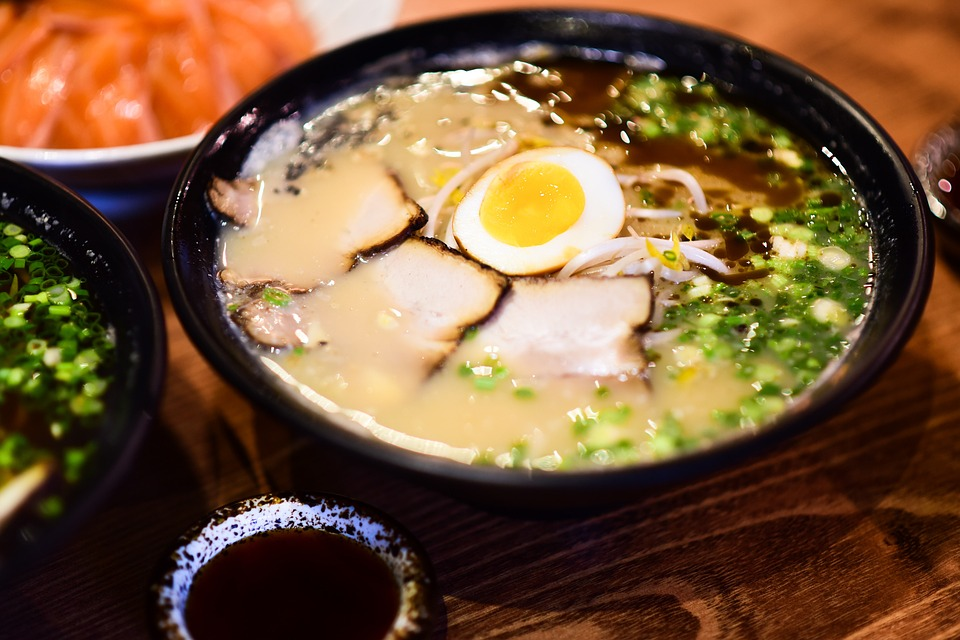

Ramen

Description
Pour 4 personnes désireuses de se régaler avec un plat complet.
Ingrédients
- 1/3 carotte coupée
- poivre
- sel
- 2 portions de nouilles chinoises
- 1 poignée de soja
- 1 poireau
- 100 g de viande (porc, volaille, ...)
- ciboulette
- 1 l de bouillon
- 1 c.à.s d'huile de tournesol
- sauce soja
Etapes
- Cuire la viande.
- Une fois que la viande est à moitié cuite, ajouter les légumes coupés en fines lamelles.
- Une fois les légumes colorés, ajouter le soja et le reste de la garniture et faire cuire le tout entre 5 et 10 minutes.
- Déglacer avec de la sauce de soja et relever avec du sel et du poivre.
- Placer votre préparation dans une casserole et couvrir avec le bouillon. Porter à ébullition.
- Ajouter les pâtes.
- Laisser cuire à feu doux une bonne demi heure.
- Dresser dans de grands bols avec quelques brins de ciboulette et ajouter les œufs durs en tranches.